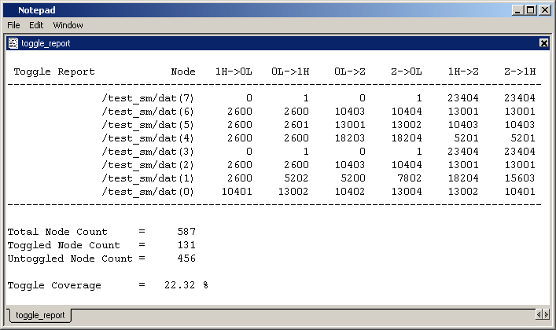

Use the toggle report command
to display information on nodes that have not toggled.
Note: You can also use the coverage report command to produce this information.
Procedure
- Enable statistics collection
with the +cover=t argument with either the vlog or vcom commands.
Use the +cover=t argument with
the vopt command for
the three-step vopt flow.
- Run the simulation with the run command.
- Produce the report with the toggle report command.
By default, the report only
shows toggle nodes that did not toggle. In order to show all toggle
nodes, including those that have already toggled, use “toggle report
-all”.
Figure 1. Sample Toggle Report 